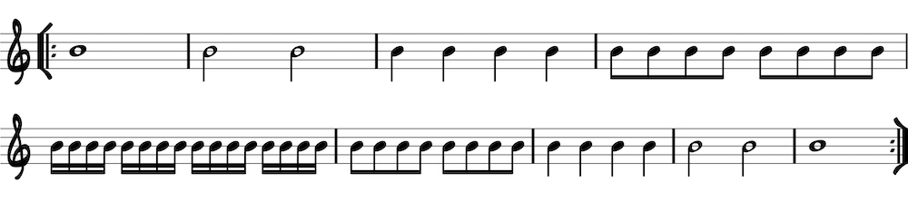
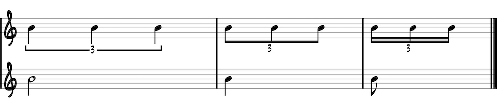
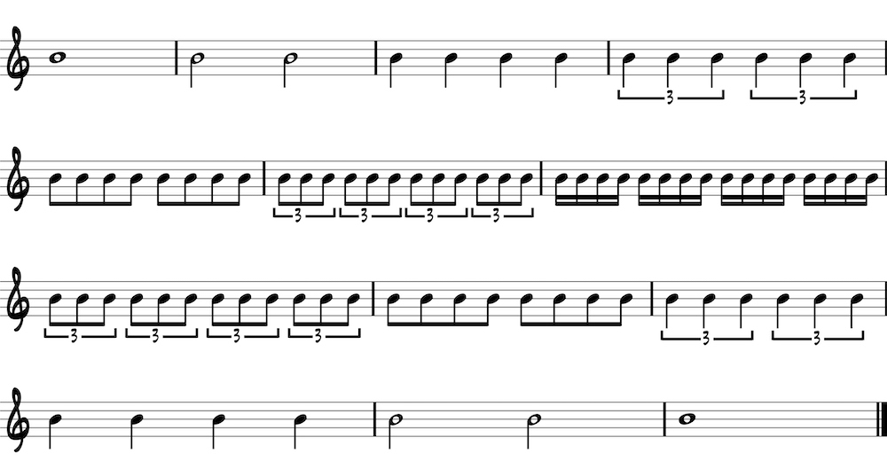

Play a measure of each subdivision from long to short and back.
Another common subdivision is the triplet. A triplet fits three beats in the space of two. It is indicated by the number 3 within a bracket over three notes. To feel a triplet, think of the next largest subdivision and break it into three beats. For instance, feel a quarter-note triplet by placing three beats in the space of a half note. Likewise, feel an eighth-note triplet by placing three beats in the space of a quarter note. While there are smaller/larger triplet subdivisions, these are the most common, so focus on them first.
Practice triplets by themselves and within the rhythmic hierarchy exercise. Once you have mastered the following, try adding in half-note triplets (three beats in the space of a whole note) or sixteenth-note triplets (three beats in the space of an eighth note).
